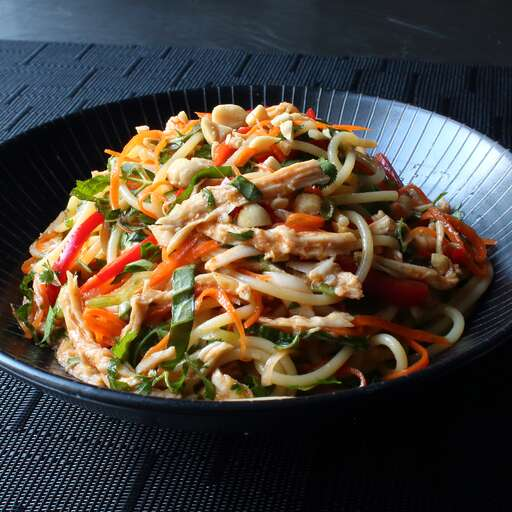

Chicken Noodle Salad

Description
Get ready to make all sorts of friends when you bring a big bowl of this Asian chicken noodle salad to the next big cookout. The only folks you might scare away are the ones who brought regular pasta salads. There's just something delightfully addictive about this special combination of cold and spicy. This recipe is the perfect catchall for all those summer vegetables we're supposed to be eating more of, as well as any dry leftover chicken you have around.
Ingredients
- 3 cloves garlic, crushed
- ½ cup seasoned rice vinegar
- 1 tablespoon soy sauce
- 1 tablespoon fish sauce
- 1 tablespoon brown sugar
- 1 tablespoon Sriracha chile sauce
- 1 tablespoon hoisin sauce
- 1 teaspoon sesame oil
- 1 cooked chicken breast
- 11 (8 ounce) package spaghetti
- 1 cup grated carrots
- 1 red bell pepper, thinly sliced
- 4 green onions, thinly sliced
- ½ cup chopped roasted, salted peanuts
- ⅓ cup chopped fresh basil
- ⅓ cup chopped fresh mint
- ⅓ cup chopped cilantro
Steps
-
Combine ranch dressing, sour cream, 1 teaspoon taco seasoning,
and salsa in a small bowl. Cover and refrigerate until serving.
-
Toss chicken with remaining taco seasoning.
Cover bowl loosely with wax paper or plastic wrap.
Microwave chicken until chicken is heated through,
about 2 to 3 minutes.
-
Warm tortillas in a skillet for about a minute
on each side to make them pliable.
Place a scoop of chicken on the tortilla and top with
lettuce, tomato, green onion, olives, avocado, cheese,
and a spoonful of the ranch dressing mixture.